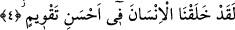

“Beled-i emîn” kelimesine gelince bununla vücud/varlık Mekke’sine işâret
olunmaktadır. Bu Mekke’nin içinde kalp beyti vardır. Varlık Mekke’si, içinde bulunan
kimseleri şeytanların kapıp, kaçırmasından vesvas ve hannas olan şeytan şerrinin oraya
girmesinden güvenli kılar. Yine son kelime ile havas ve aza ile hâsıl olan kalıbın
amellerine işâret olunmaktadır. Kalıp şerefi kalpten alır. Dolayısıyla kalp ruhtandır ve
ruh da sırdandır. Bu nedenle bunların tümü, üzerlerine yemin edilmeye lâyık nesneler
olmuşlardır.
4. Biz insanı en güzel biçimde yarattık.
“Biz insanı” yâni insan cinsini “en güzel biçimde yarattık.” Âyette yer alan
“takvîm” kelimesini açacak olursak bu kelimeden türeme “kâme” kalktı, doğruldu
demektir. “Kâme el emru” bir iş mutedil ve düzgün oldu, demektir. “Kavvemtuhû”
Kamus’un ifâdesine göre bir şeyi düzgün hale getirdim, demektir. “Takvîm” ise herhangi
bir şeyi olması gereken form ve düzgünlüğe sokmak demektir.
Yahya b. Eksem Kâdî “takvîm” kelimesini, “güzel sûret ve biçim” şeklinde tefsir
etmiştir. Anlatılır ki, Yahya b. Eksem’in zamanının hükümdarı, bulutsuz ve ayın
görüldüğü bir gecede eşiyle halvete girer. Hükümdar hanımına, “eğer şu aydan daha
güzel değilsen benden boş ol” der. O zamanın âlimleri bu söz gereği kadının sultandan
boş düştüğüne fetva verirler, ancak Yahya b. Eksem bu boşanmanın gerçekleşmediğini
söyler. Kendisine: “Sen şeyhlerine aykırı davranıyorsun” dediklerinde Yahya: “Fetva
vermek ilimle olur. Bu fetvayı ben vermiyorum. Bizden daha âlim olan Allah veriyor.
Cenab-ı Hakk Kur’an-ı Kerim’inde: “Biz insanı en güzel biçimde yarattık” buyuruyor.
Şu halde insan yaratıkların en güzelidir. İnsandan daha güzel hiçbir şey yoktur.
Dolayısıyla sultan bu sözüyle hanımını boşamış olmaz” şeklinde cevap verir.
Müfredat’ta ifâde olunduğuna göre bu âyet-i kerime canlılar arasında insana âid akıl,
anlama ve iki ayak üzerine durabilme gibi özelliklere işâret etmektedir.
Bu açıklamalardan sonra âyet-i kerimenin mânâsı: Biz insanı sûreten ve manen
olabileceği en güzel biçimde ve şekilde yarattık, demektir. Çünkü Allah insanı boyu
posu düzgün, organları uyumlu, şekli güzel bir biçimde görmektedir. Çünkü Allah bir
âyet-i kerimede; “Size şekil verip de şeklinizi güzel yapan... Allah’tır” (Mü’min,
40/64) buyuruyor. Bunun yanında Allah insanı hayat, ilim, irade, kudret, semi’ (işitme),
basar (görme) ve kelam sıfatları gibi ilahi sıfatlarla bezemiş olarak yaratmaktadır.
Kaldı ki Peygamber Efendimiz’in (s.a.) “Allah Adem’i kendi sûretinde yaratmıştır”
[153] hadisi ile işâret buyurmuş olduğu hakîkî ve ilahi sûret işte bu sıfatlardan ibarettir.
Peygamber Efendimiz’in (s.a.) “nefsini bilen, rabbini bilir” [154] sözü bu anlayışa
dayalıdır. Şu halde insanoğlu celal, cemal ve kemalin zuhûr etmiş olduğu noktadır.